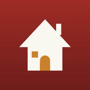

Hushållspanelen
Öppnar…
Öppna HushållspanelenLägg till den här sidan på hemskärmen: Dela → Lägg till på hemskärmen (iPhone) eller ⋮ → Lägg till på startskärmen (Android). Ikonen öppnar sedan appen direkt.

Öppnar…
Öppna HushållspanelenLägg till den här sidan på hemskärmen: Dela → Lägg till på hemskärmen (iPhone) eller ⋮ → Lägg till på startskärmen (Android). Ikonen öppnar sedan appen direkt.